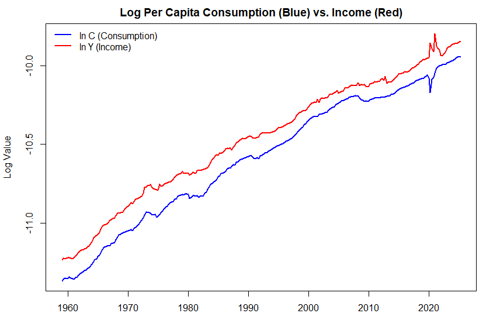
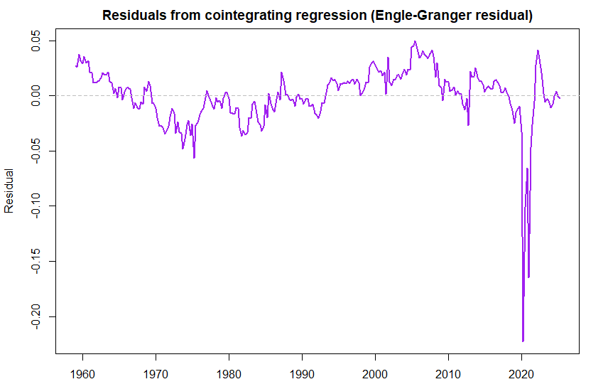
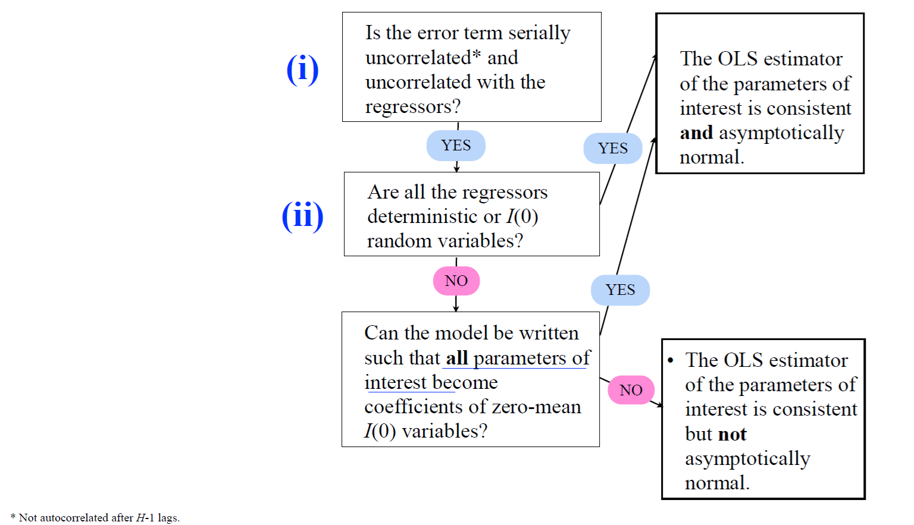
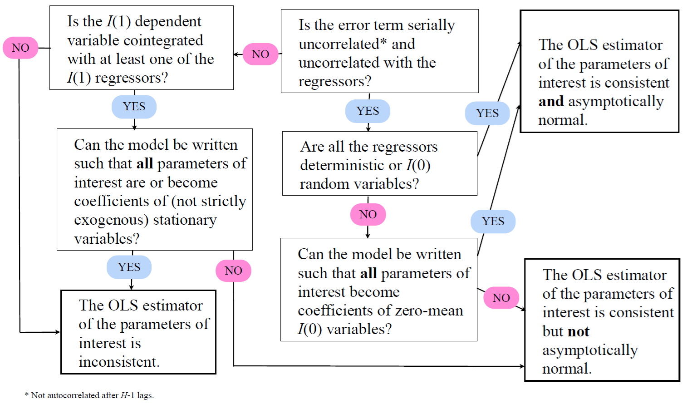

13 Linear regressions with I(1) variables
Instead of stationary variables, as considered earlier in Section 10, let us now assume that there are two variables, \(y_t\) and \(x_t\), and either of them or both are nonstationary and specifically \(I(1)\) variables.
- \(y_t\) is again the dependent variable and \(x_t\) is the predictive/explanatory variable
Before continuing to examine linear (predictive) regressions between \(y_t\) and \(x_t\) in different cases, let us introduce an important concept of cointegration.
13.1 Basics of cointegration
An important special case of the linear regression between \(y_t\) and \(x_t\), where \(y_t\) and \(x_t\) are nonstationary \(I(1)\) variables, arises when there is a common stochastic trend in both series.
In other words, suppose that there is a linear relationship between variables so that there exists some value \(\delta\) such that \(y_t - \delta x_t\) is stationary (\(I(0)\)) although \(y_t\) and \(x_t\) are nonstationary (\(I(1)\)).
- In such case, it is said that \(y_t\) and \(x_t\) are cointegrated and they share the common trend.
In principle, an alternative way to construct a linear regression model, when \(y_t\) and \(x_t\) are \(I(1)\), is based on the differences \(\Delta y_t\) and \(\Delta x_t\) which are then stationary (\(I(0)\)).
This is not an optimal strategy if there is indeed a cointegration relationship between the variables.
Cf. the discussion on overdifferencing in Section 12.
Let us examine cointegration more detail. If \(y_t\) and \(x_t\) are \(I(1)\) and cointegrated, then \[\begin{equation*} z_t= y_t - \delta x_t = [y_t \quad x_t] [1 \quad -\delta]^{\prime} \thicksim I(0). \end{equation*}\] The vector \([1 \quad -\delta]^{\prime}\) is called the cointegration vector.
Cointegration is often interpreted as a long-run relationship between the variables. Assume that the equilibrium of the variables \(y_t\) and \(x_t\) is defined by the relationship \(y_t= \tilde{\delta} x_t\) for some fixed \(\tilde{\delta}\). Then \(\widehat{z}_t= y_t - \widehat{\delta} x_t\) is the “equilibrium error” which measures the extent \(y_t\) deviates from its “equilibrium value”.
As \(z_t\) is \(I(0)\), the equilibrium error is stationary and fluctuating around zero. In other words, on average, the system is in equilibrium.
Notice that we can also use a slightly modified definition of cointegration for the above, especially when there will be more than two variables involved. We will consider this definition, and cointegration in connection to the VAR model more detail in the Advanced Time Series Econometrics course.
13.2 Testing cointegration between two variables
From the discussion above, it is obvious that it is important to distinguish whether there is a cointegration relationship between the variables.
Consider a “cointegration regression” between two \(I(1)\) variables \(y_t\) and \(x_t\): \[\begin{equation*} y_t= \alpha + \delta x_t + u_t. \end{equation*}\] If \(y_t\) and \(x_t\) are cointegrated, then \(u_t\) is \(I(0)\). If not, \(u_t\) will be \(I(1)\). Therefore, after the model is estimated by OLS, the presence of a possible cointegration relationship can be evaluated by testing for a unit root in the residuals \(\widehat{u}_t\).
Testing for cointegration with a known coefficient. In some applications, the cointegration coefficient \(\delta\) (and the intercept \(\alpha\)) is known in advance due to economic theory or other application-specific knowledge. When the coefficient is known, the cointegration relationship can be tested as follows. For the sake of simplicity, we will assume \(\alpha=0\) in the procedure described below
Construct the series \(z_t = y_{t} - \delta x_t\).
Use the ADF test for the null hypothesis, which implies \(z_t \thicksim I(1)\). If \(H_0\) is rejected, then there is a cointegration relationship.
Testing for cointegration with unknown coefficients. If \(\delta\) (and \(\alpha\)) are unknown, then we can proceed as follows (Engle-Granger ADF-test):
Estimate the following model by using OLS \[\begin{equation*} y_t = \alpha + \delta x_t + u_t. \end{equation*}\]
The series \(\widehat{u}_t= y_t - \widehat{\alpha} - \widehat{\delta} x_t\) is the residual of the regression.
Test the null hypothesis implying \(\widehat{u}_t \thicksim I(1)\).
Critical values are now different than in the above case (and ADF test) as unit root testing is based on the residuals.
If \(y_t\) and \(x_t\) are indeed cointegrated, OLS yields a consistent estimator for the cointegration coefficient \(\delta\). However, the OLS estimator of \(\delta\) has a non-normal asymptotic distribution, and the inferences based on the standard \(t\)-test statistic can be misleading.
Example: Consumption and income. Let us consider an important empirical question derived from Hall’s (1978) Permanent Income Hypothesis (PIH) in the context of cointegration.
- R. E. Hall (1978). Stochastic implications of the life cycle-permanent income hypothesis: Theory and evidence. Journal of Political Economy, 86(6), 971–987.
The testable hypothesis is that there is a stable long-run relationship exist between real consumption and real income, such that the difference between them (the cointegrating residual) is stationary.
- In other words, the cointegration theory predicts that since consumption is proportional to permanent income (the present value of expected future income), and both are driven by a common stochastic trend (permanent income shocks), they should be cointegrated.
So, let us test the prediction of the PIH that real per capita consumption (log(\(c_t\)) and real per capita disposable income (log(\(y_t\)) share a single cointegrating relationship.
Hypothesis: The two variables (\(\log(c_t)\) and \(\log(y_t)\)) are \(I(1)\) and cointegrated.
Long-run equation: \(\log(c_t) = \alpha + \delta \log(y_t) + u_t\)
PIH implication: The cointegrating vector should be \((1,-\beta_1)\), where \(\beta_1\) is theoretically close to 1 (or exactly 1 in the simplest PIH model) because, in the long run, consumption should grow proportionally with permanent income. The error term \(u_t\) and the resulting residuals \(\widehat{u}_t\) must be \(I(0)\) (stationary).
Check first the unit root hypothesis for the two time series. In these ADF tests, a constant and linear trend component is included in the test regression and the number lagged differences \(p\) is 4:
log(c_t)
Test Statistic: -2.005634
P-value: 0.595
log(y_t)
Test Statistic: -2.582764
P-value: 0.289 Estimation result of the cointegration regression:
Coefficients:
Estimate Std. Error t value Pr(>|t|)
(Intercept) 0.383122 0.044448 8.62 6.29e-16 ***
ln_Y 1.048293 0.004244 246.99 < 2e-16 ***
---
Signif. codes: 0 ‘***’ 0.001 ‘**’ 0.01 ‘*’ 0.05 ‘.’ 0.1 ‘ ’ 1
Residual standard error: 0.02692 on 264 degrees of freedom
Multiple R-squared: 0.9957, Adjusted R-squared: 0.9957
F-statistic: 6.1e+04 on 1 and 264 DF, p-value: < 2.2e-16
Based on the Engle-Granger two-step procedure, the null hypothesis of no cointegration can be rejected at 5% level (see testing result below).

Test Statistic: -4.561388
> cat("P-value:", p_val_drift, "\n")
P-value: 0.000197051
13.3 Linear regressions containing I(1) variables
Recall the linear regression \[\begin{equation*} y_t= \boldsymbol{x}^{\prime}_t \boldsymbol{\beta} + u_t, \end{equation*}\] and the two assumptions \(\mathrm{(i)}\)–\(\mathrm{(ii)}\) set in Section 10:
\(\mathrm{(i)}\) The error term \(u_t\) is serially uncorrelated and uncorrelated with the regressors included in \(\boldsymbol{x}_t\).
\(\mathrm{(ii)}\) All the regressors in \(\boldsymbol{x}_t\) are either deterministic or stationary random variables.
Assume now that only \(\mathrm{(i)}\) holds, that is the error term \(u_t\) is serially uncorrelated and uncorrelated with the regressors included in \(\boldsymbol{x}_t\).
Even if the model cannot be written in this way, the OLS estimator of the coefficients of the \(I(1)\) regressors \(\boldsymbol{x}_t\) is consistent. However, its asymptotic distribution is, in general, nonstandard such that usual inference does not apply.
If the model can be written such that all the parameters of interest are coefficients of mean zero stationary variables, their OLS estimator is consistent and asymptotically normal.
To examine these points more detail, let us consider again the following relatively simple regression model \[\begin{equation*} y_t= \beta_0 + \beta_1 x_{t-1} + \beta_2 x_{t-2} + u_t, \end{equation*}\] where \(x_t \thicksim I(1)\). The model can be rewritten as \[\begin{equation*} y_t= \beta_0 + (\beta_1+\beta_2) x_{t-1} - \beta_2 (x_{t-1} - x_{t-2}) + u_t, \end{equation*}\] or \[\begin{equation*} y_t= \beta_0 + \beta_1 (x_{t-1}-x_{t-2}) + (\beta_1 + \beta_2) x_{t-2} + u_t. \end{equation*}\] As \((x_{t-1} - x_{t-2}) \thicksim I(0)\), and hence, standard inference on \(\beta_2\) (or \(\beta_1\)) holds. Therefore, both \(\beta_1\) and \(\beta_2\) cannot simultaneously be written as coefficients of \(I(0)\) variables (unless higher lags are included in the model).
The OLS estimator of \(\beta_1\) and \(\beta_2\) is not, in general, jointly asymptotically normal.
The test statistic on a hypothesis concerning both coefficients (for instance \(H_0: \beta_1 = \beta_2\)), in general, does not have the usual asymptotic \(\chi^2\) distribution.
These remarks are compiled to the next figure.

Let us continue with linear regression where now also the assumption \(\mathrm{(i)}\) does not hold and the dependent variable is \(I(1)\).
If the dependent variable is not cointegrated with any of the regressors, the OLS estimator of the coefficients of the \(I(1)\) regressors is inconsistent.
If the dependent variable is cointegrated with at least one of the regressors, the OLS estimator of the parameters of interest
that can be written as coefficients of stationary variables, is inconsistent.
that cannot be written as coefficients of stationary variables, is consistent, but not asymptotically normal.
For instance, consider the following regression model: \[\begin{equation*} y_t = \beta_0 + \beta_1 x_{1t} + \beta_2 x_{2t} + u_t, \end{equation*}\] where all variables are \(I(1)\), and \(y_t\) and \(x_{2t}\) are cointegrated and assumption \(\mathrm{(i)}\) does not hold.
If \(x_{1t}\) and \(x_{2t}\) are cointegrated such that \((x_{1t} - \gamma x_{2t}) \thicksim ~ I(0)\), the model can be written as \[\begin{equation*} y_t = \beta_0 + \beta_1 (x_{1t} - \gamma x_{2t}) + (\beta_1 \gamma + \beta_2) x_{2t} + u_t, \end{equation*}\] and the OLS estimator of \(\beta_1\) is inconsistent.
If \(x_{1t}\) is not cointegrated with \(x_{2t}\), \(\beta_1\) cannot be written as a coefficient of an \(I(0)\) variable, and hence, its OLS estimator is consistent, but not asymptotically normal.
The complete cheat sheet on linear regression with \(I(0)\) and \(I(1)\) variables is summarized hereby:

A spurious regression emerges when a statistically significant relationship between two \(I(1)\) variables \(y_t\) and \(x_t\) is found although those are completely unrelated. Assume that a researcher estimates a linear regression \[\begin{equation*} y_t = \beta_0 + \beta_1 x_t + u_t, \end{equation*}\] but assuming wrongly that the variables \(y_t\) and \(x_t\) are stationary. Instead, they are generated by two independent random walks (i.e., \(y_t\) and \(x_t\) are \(I(1)\) variables) \[\begin{eqnarray*} y_t &=& y_{t-1} + u_{1t}, \quad u_{1t} \thicksim \mathsf{iid}(0, \sigma^2_1) \\ x_t &=& x_{t-1} + u_{2t}, \quad u_{2t} \thicksim \mathsf{iid}(0, \sigma^2_2). \end{eqnarray*}\] This typically leads to the estimation result of the above linear regression characterized by a fairly high \(R^2\) (the coefficient of determination), highly autocorrelated residuals \(\widehat{u}_t\) and a (highly) statistically significant estimate of \(\beta_1\). This result is clearly spurious given that the variables are completely independent!
Estimation results like this should not be taken seriously.
The reason is that with \(y_t\) and \(x_t\) being \(I(1)\) variables, the error term \(u_t\) will also be \(I(1)\), not stationary (\(I(0)\)).
Solution to this problem is to include both the lags of \(y_t\) and \(x_t\) as predictors in the model. In other words, we end up a model \[\begin{equation*} y_t = \beta_0 + \beta_1 x_t + \beta_2 y_{t-1} + \beta_3 x_{t-1} + u_t. \end{equation*}\] In this case the OLS estimator is consistent. Thus, in general, including lagged values in the regression is sufficient to solve many of the problems associated with possibly spurious regressions.
An example of a spurious regression situation can be replicated with the following program code below in R lab.
13.4 R Lab
All the R codes considered in this section are compiled in the following link: